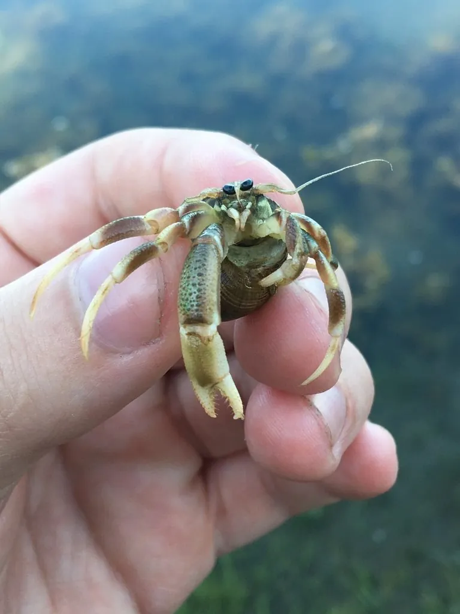

甲壳动物 · 动物界
长指寄居蟹 Pagurus longicarpus

北美大西洋沿岸常见的小型寄居蟹，右螯较大，腹部柔软，寄居在螺壳中，随身体长大不断更换更大的壳。
- 分类
- 门节肢动物门纲软甲纲目十足目科寄居蟹科属寄居蟹属
- 栖息环境
- 潮间带和浅海的沙泥底、海草床和盐沼，寄居在空螺壳中
- 地理分布
- 北美大西洋沿岸，从加拿大东部到墨西哥湾
- 保护级别
- IUCN 暂无评估；中国未列入国家重点保护名录
物种志
长指寄居蟹体长 1–2 cm，身体前部有坚硬的甲壳，腹部柔软且不对称，盘曲在螺壳中；右螯明显大于左螯，指节细长，因此得名；步足细长，末端有钩爪，便于抓住壳口。
它分布于北美大西洋沿岸的潮间带和浅海，栖息于沙泥底、海草床和盐沼，寄居在滨螺、蛾螺等空螺壳中，杂食，取食藻类、腐肉和有机碎屑。长指寄居蟹随着身体长大需要不断更换更大的螺壳，换壳时会与其他个体争夺，有时还会发生“换壳排队”现象。它是潮间带常见的小型甲壳动物，也是鱼类和鸟类的食物；受惊时它会把身体缩进壳里，用大螯堵住壳口，空壳资源紧张时个体会争抢螺壳。目前 IUCN 暂无评估；中国未列入国家重点保护名录。
形态与习性
- 食性杂食，取食藻类、腐肉和有机碎屑
- 体长1–2 cm
- 识别右螯明显大于左螯，指节细长
- 习性寄居在空螺壳中，随生长更换更大的壳
- 防御受惊时缩进壳里，用大螯堵住壳口
- 生态潮间带常见小型甲壳动物，是鱼类和鸟类的食物
趣味知识
- 长指寄居蟹的右螯又大又长，是它堵住壳口的“大门”。
- 它长大一些就要换更大的螺壳，空壳不够时还会争抢。
- 一群寄居蟹排成一列换壳的现象，被称为“换壳队列”。